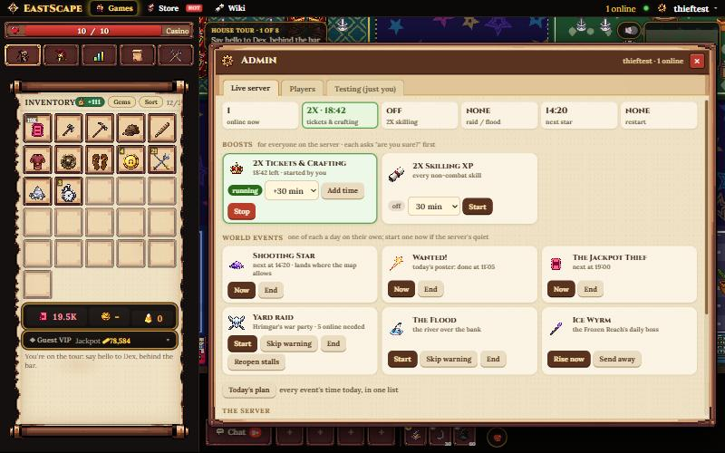
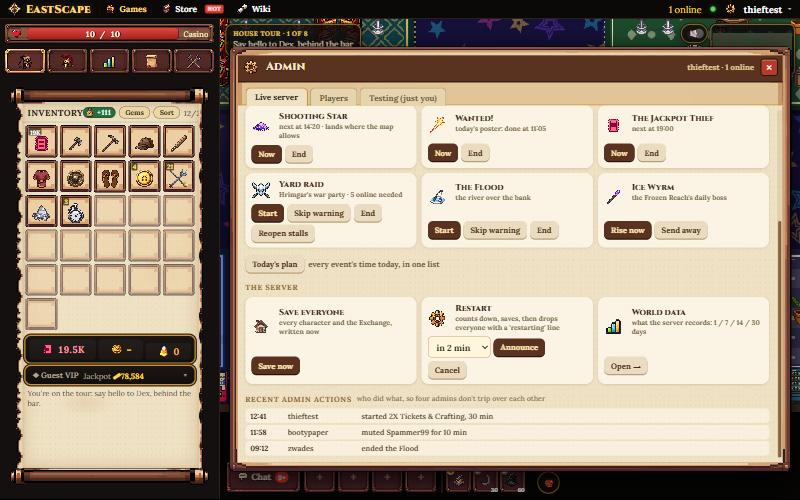
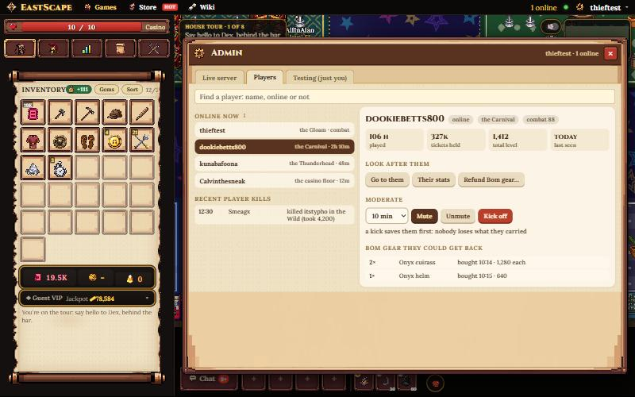
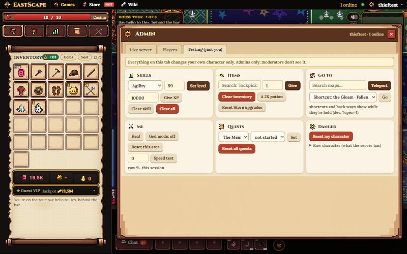

The admin panel
Today it's one long column in the side panel, 342 pixels wide: ten boxes and about 45 controls, where running the live server, looking after a player, and testing on your own character all sit together. "Start 2X for everyone" is a click away from "Give me a 2X potion". The proposal: a proper window (the Character window's size), three tabs split by who an action touches: the whole server, one player, or just you.
The window, in the game

Live server. A strip says what's going on right now (who's online, 2X and its time left, raids, the next event, a restart). Below, every server-wide thing is a card with its state and its buttons together: start, add time, stop on one card instead of a minutes box in one row and the stop button in another. Each asks "are you sure?" before it touches everyone.

The server: save everyone, the restart countdown (a choice of 2/5/10 minutes instead of typing seconds) and World data in one place. And a new Recent admin actions list: four admins share this server, and nothing today says who started the 2X or ended the Flood.

Players. One name box and the list of who's online; pick someone and everything about them is on one card: where they are, hours, tickets, levels, and every action that takes a name (go to them, their stats, mute for a chosen time, unmute, kick, the Bom gear they could get back). Today those are four separate name boxes in three different boxes. Recent player kills sit here too.

Testing (just you). Everything that only changes your own character, said at the top in a yellow box: skills, items (a search box instead of a 700-item dropdown), go to (a searchable map list, plus the shortcut and back-way pickers while those are held), heal, god mode, the speed test, quests, and the resets. Moderators don't see this tab at all.
Every control today, and where it goes
Added, and taken away
Building it
- The window: the admin tab's button opens it (the panel keeps only a short "Open admin" and the online count). Built like the Character window: its own module, loaded on first open, so players never download it.
- The state: one "admin state" message answered from what the server holds (this.dbl, sx2, raid, events, restart) plus the action log; sent on open and when something changes.
- The player card: the existing "statsof" answer, shaped into the card, plus the Bom refund list it already returns.
- The log: every admin command records {who, what, when} into a 50-long list kept with the world's state.
- Mods: the tabs and cards are filtered by the same canRun list the server uses, so the two can't drift.
- About 3 days. It could ride in v1.1 or ship on its own: admins only, nothing players see.